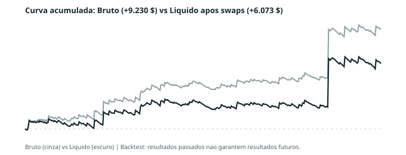
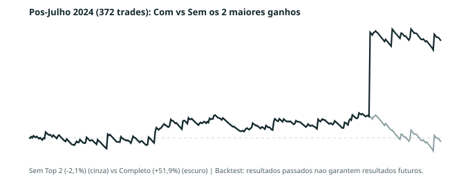
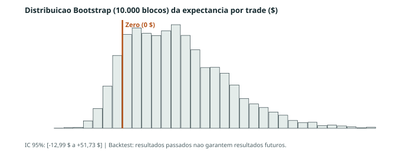

Uma auditoria estatística a um backtest de seguimento de tendência em cripto. O que interessa aqui é o método e o que os dados mostram, não o desempenho.
Um sistema de seguimento de tendência em cripto (velas de 4 horas), testado de janeiro de 2024 a novembro de 2026, com 435 trades. Os números abaixo partem de 10.000 $ de capital inicial simulado.
O resultado bruto é de 9.230 $. Depois de swaps, fica em 6.073 $, cerca de 34% menos. Olhar só para o bruto dá uma imagem mais favorável do que a que o sistema teria tido.

Nos 28 meses a partir de julho de 2024 (372 trades), a carteira que aceita todos os sinais ganha cerca de +51,9%. Se removermos os 2 maiores ganhos, passa a cerca de -2,1% (fator de lucro 0,99). Dois trades pesam mais do que a diferença entre ganhar e perder.

A expectância média é de +13,95 $ por trade. O intervalo de confiança de 95%, calculado por blocos de 12 trades, vai de -12,99 $ a +51,73 $. O intervalo inclui zero, por isso esta amostra não permite distinguir a vantagem do acaso.
Com a mesma média e dispersão, seriam precisos cerca de 2.000 trades para o intervalo deixar de incluir zero. Ao ritmo desta estratégia, isso são vários anos de dados reais.

Comparámos tetos para o risco aberto total, nos 28 meses a partir de julho de 2024:
| Teto de risco aberto | Retorno | Fator de lucro | Janelas de 56 dias com drawdown de 8,5% ou mais | Retorno sem os 2 maiores ganhos |
|---|---|---|---|---|
| 1,0% (máx. 2 posições) | +11,0% | 1,16 | 0,0% | +3,3% (fator 1,05) |
| 1,5% (máx. 3) | +42,7% | 1,41 | 1,1% | -0,6% (fator 0,99) |
| 2,0% (máx. 4) | +51,5% | 1,41 | 3,4% | -3,2% (fator 0,98) |
| Sem teto | +51,9% | 1,37 | 7,5% | -2,1% (fator 0,99) |
Mais risco aberto rende mais e aumenta as quedas. Nenhuma destas escolhas é um vencedor estatístico: é uma decisão de apetite ao risco. O teto mais baixo é também o que depende menos dos 2 maiores ganhos, mas ainda assim rende pouco.
Simulámos um desafio de duas fases (objetivos de +10% e +5%, drawdown estático de 10%) em blocos de 12 trades, com um horizonte de 24 meses, contra uma linha de base sem vantagem (retornos centrados em média zero).
| Cenário | Conversão até conta financiada | Sem payout em 24 meses | Prejuízo no ano 2 |
|---|---|---|---|
| Linha de base sem vantagem (média zero) | 18,9% a 19,2% | 72,4% a 73,0% | 44,0% a 46,8% |
| Backtest, teto 1,0% e máx. 2 posições, amostra completa (226 trades) | 50,6% | 42,1% | 18,1% |
| Backtest, teto 1,0% e máx. 2 posições, desde julho de 2024 (189 trades) | 39,4% | 52,2% | 24,2% |
| Backtest sem os 2 maiores ganhos | 9,7% a 15,6% | 82,0% a 86,2% | n/d |
| Sem os 2 maiores ganhos, também centrado em zero | 15,1% | n/d | n/d |
Como ler:
Estou a fazer 10 auditorias gratuitas a extratos do TradingView e do MT5 para perceber o que é útil. Não vendo sinais nem recomendações.